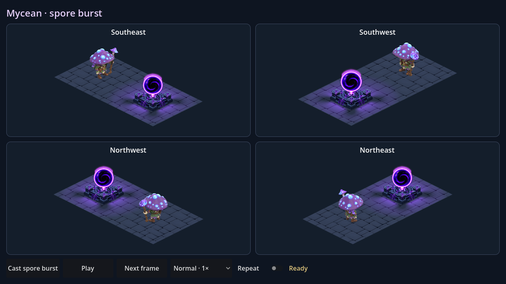
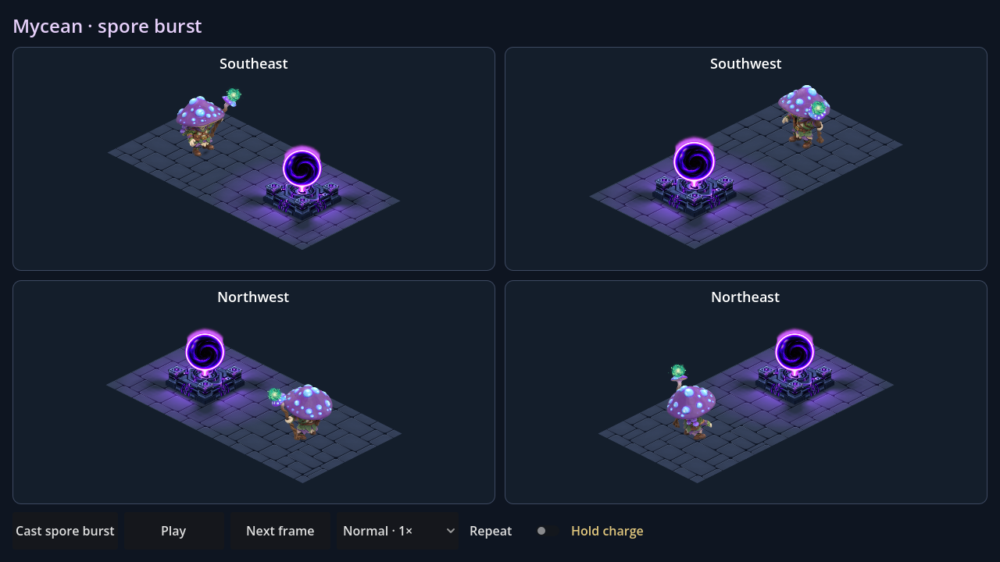
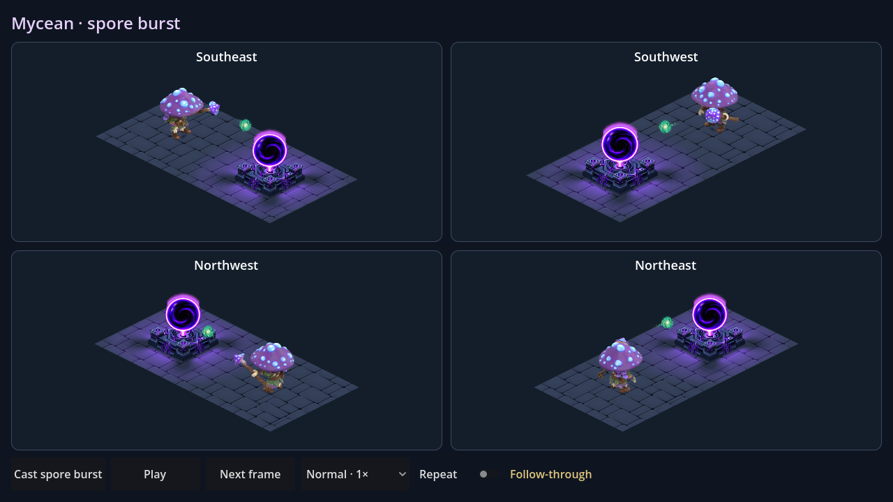
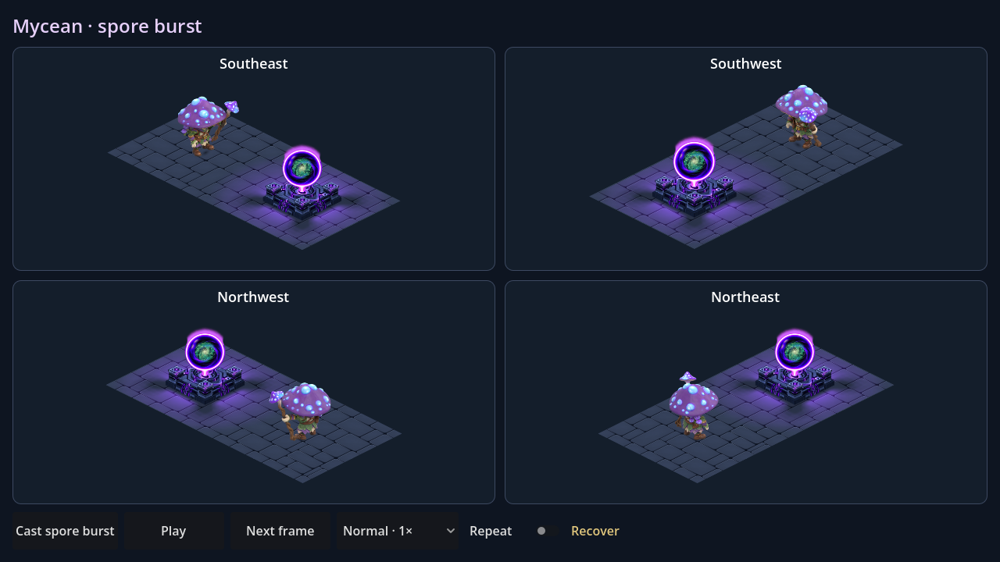
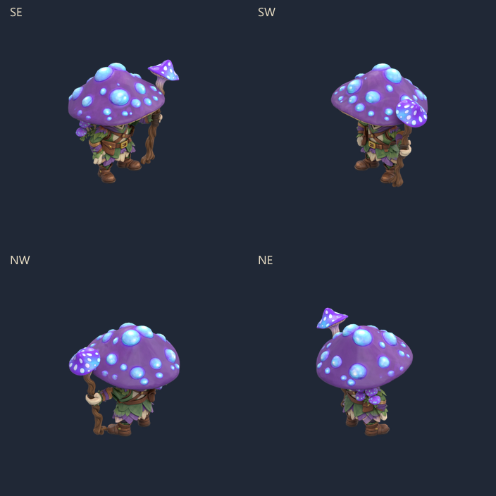
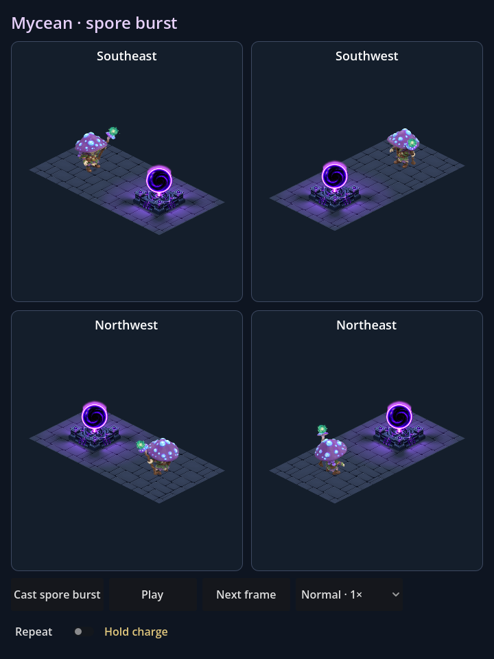
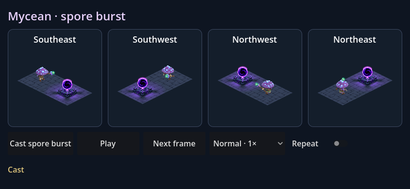

Dungeon Empire · Mycean · v8
Spore burst
A forceful staff cast: draw back, gather a living orb, then send it into the Core. The cyan-green projectile detaches completely and bursts into luminous spores on impact.

Native capture · 1.4s attack · launch at0.65s · impact at0.97s · 1s pause between review loops.



Distinct from magical unlocking: a backward wind-up and forward cast, a separate projectile, an explosive impact, and a cyan-green palette. No sustained beam or door runes.
Whole-character sprites

Full pose boardMobile layout checks

